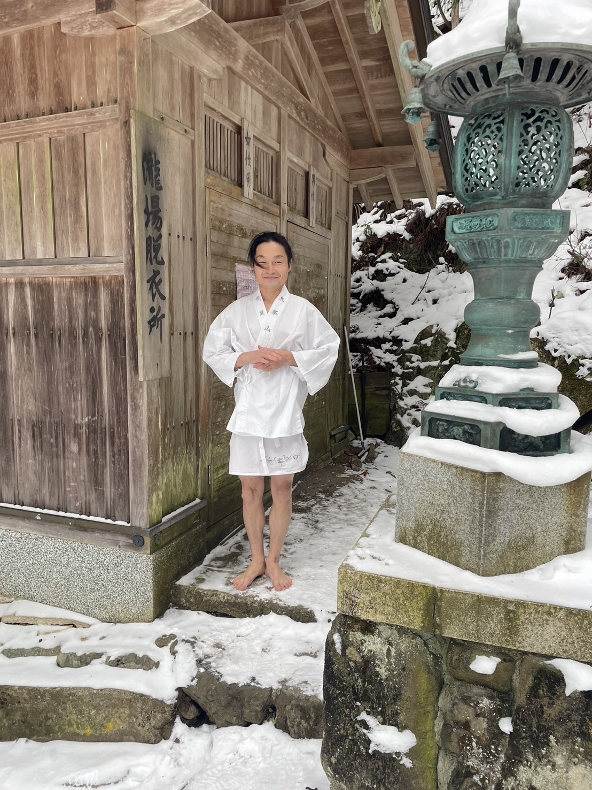

DAY 01
地球とめぐる46億年
女人結界門から歩きはじめ、山上川、滝、岩屋、名水、祈りの場をめぐります。ゴールは洞川小中学校跡のグラウンド。空を見上げながら振り返ります。
Concept
感じようとしなくても、感じてしまう土地がある。天川村は、何者かになるための場所ではなく、いのちの流れにもう一度還る場所です。
Way of Lifeは、地球46億年の歴史を4.6kmの歩みに見立てて歩く巡礼です。ポイントごとに宇宙、地球、生命の物語を聞き、静かに感じ、言葉にしていきます。
月や太陽が遠い天体ではなく、友達や親のように近く感じられる。隣の人、植物、水、石、地球が、どこか親戚のように思えてくる。そんな世界との距離が近づく体験を、天川村の水と森と祈りの場でひらきます。

Voices
世界に守られている、祝福されているという感覚を、身体で受け取る時間にしたい。
たくちゃん土地にご挨拶する場所が増えることで、地球とのつながりも広がっていく。
ともちゃん最後には、みんなで手をつないでゴールしたくなるような一体感が生まれる。
ふうちゃん子どもも楽しんでほしいし、自分も参加者としてちゃんと楽しみたい。
こすずちゃん自分という存在も、隣にいる人も、植物も、かけがえがないと思い出す。
まさおくん風、土の匂い、竹の音。自然のエネルギーを受け取って、幸せに戻っていく。
めいちゃんTwo Days
1日目は、山上川沿いの道を歩きながら、地球46億年の時間を足でたどります。2日目は、室内で静かに言葉をほどき、自分の中にある命の流れを見つめます。
頭で理解するだけではなく、歩く、聞く、見る、寝そべる、分かち合う。身体全体で「わたしはこの世界の中にいる」と思い出すための2日間です。

女人結界門から歩きはじめ、山上川、滝、岩屋、名水、祈りの場をめぐります。ゴールは洞川小中学校跡のグラウンド。空を見上げながら振り返ります。

外で受け取ったものを、内側の言葉へ。瞑想、ワーク、シェアを通して、自分の中の宇宙とこれからの生き方を見つめます。
Route


Family & Children
子どもを連れてきたのに、親が子どもの面倒で終わってしまう。天川版では、そこを越えたいと話し合っています。
子どもたちは子どもたちで、自然体験やWay of Lifeアプリを通した学びへ。親は親で、歩き、感じ、言葉にする時間へ。天川村の子どもたちと、外から来る子どもたちの交流も検討しています。
安全管理、見守り体制、年齢条件は現在調整中です。
Dorogawa Night
歩いたあとの身体で、温泉街の灯りの中をゆっくり歩く。昼の水と森の時間とは違う、もうひとつの天川の表情です。
宿泊や懇親の流れも、この夜の雰囲気を大切にしながら整えていきます。


Information
歩きやすい靴、帽子、飲み物、糖分補給、日焼け対策、雨具。詳細は確定後に案内します。
川沿い、岩屋、橋、熱中症対策を含めて下見で確認します。子どもの見守り体制も設計中です。
車での現地集合を想定しつつ、公共交通と送迎導線も整理します。
Host
奈良県天川村 地域おこし協力隊。天川村を拠点に、問いと対話、コーチング、サッカー教室、寺子屋構想、座禅・修験道体験、地域の人との関係づくりを進めている。
この企画での役割は、単なる現地案内ではなく、天川村という場の意味を読み、参加者が体験を自分の言葉に戻していくための場をひらくこと。かおるちゃんが取り組んでいる仕事は、場の力と人の本来性をつなぐ「場のコーチング」です。
天川村は、感じようとしなくても感じてしまう場所。生まれ変わるとは、何者かになることではなく、還ること。その感覚を、この巡礼の中心に置いています。
場のコーチングを見る
Entry
現在、集合場所、宿泊、子ども向けプログラム、安全管理、送迎導線を最終調整しています。告知開始は2026年6月初旬から中旬を目安にしています。
申込フォームが確定したら、このページのボタンを正式な申し込み先へ差し替えます。
開催概要を確認する